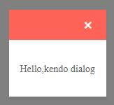

一、kendo dialog 的架構
一個基本的 kendo dialog 的架構如下
<!DOCTYPE html> <html> <head> <meta charset="utf-8" /> <title>Kendo UI Snippet</title> <link rel="stylesheet" href="https://kendo.cdn.telerik.com/2020.1.406/styles/kendo.default-v2.min.css" /> <script src="https://code.jquery.com/jquery-1.12.4.min.js"></script> <script src="https://kendo.cdn.telerik.com/2020.1.406/js/kendo.all.min.js"></script> </head> <body> <div id="dialog"> <p>Hello,kendo dialog</p> </div> <script> $(document).ready(function () { $("#dialog").kendoDialog(); }); </script> </body> </html>
執行畫面

由於 kendo dialog 初始後預設是 open 的，但我們在實際使用時，會先將他 close 隱藏起來，
待點選某個按紐觸發事件時，才把他 open 起來。
<!DOCTYPE html> <html> <head> <meta charset="utf-8" /> <title>Kendo UI Snippet</title> <link rel="stylesheet" href="https://kendo.cdn.telerik.com/2020.1.406/styles/kendo.default-v2.min.css" /> <script src="https://code.jquery.com/jquery-1.12.4.min.js"></script> <script src="https://kendo.cdn.telerik.com/2020.1.406/js/kendo.all.min.js"></script> </head> <body> <button id="show">show dialog</button> <div id="dialog"> <p>Hello,kendo dialog</p> </div> <script> $(document).ready(function () { $("#dialog").kendoDialog(); var dia = $("#dialog").getKendoDialog(); dia.close(); $("#show").click(function () { dia.open(); }); }); </script> </body> </html>
說明：
取得實體方式可使用 .getKendoDialog() 或是 .data("kendoDialog") 皆可。
二、kendo dialog configuration 的載入
以下範例示範 kendo dialog configuration 的載入方式
<!DOCTYPE html> <html> <head> <meta charset="utf-8" /> <title>Kendo UI Snippet</title> <link rel="stylesheet" href="https://kendo.cdn.telerik.com/2020.1.406/styles/kendo.default-v2.min.css" /> <script src="https://code.jquery.com/jquery-1.12.4.min.js"></script> <script src="https://kendo.cdn.telerik.com/2020.1.406/js/kendo.all.min.js"></script> </head> <body> <div id="dialog"></div> <script> $(document).ready(function () { $("#dialog").kendoDialog({ width: "400px", title: "Hello", content: "<p>Hi, Kendo dialog<p>", visible: true, actions: [ { text: 'NO' }, { text: 'OK', primary: true, action: function () { console.log("OK"); } } ] }); }); </script> </body> </html>
三、kendo.alert()、kendo.confirm()、kendo.prompt()
<!DOCTYPE html> <html> <head> <meta charset="utf-8" /> <title>Kendo UI Snippet</title> <link rel="stylesheet" href="https://kendo.cdn.telerik.com/2020.1.406/styles/kendo.default-v2.min.css" /> <script src="https://code.jquery.com/jquery-1.12.4.min.js"></script> <script src="https://kendo.cdn.telerik.com/2020.1.406/js/kendo.all.min.js"></script> </head> <body> <script> //kendo.alert("String to alert"); //kendo.confirm("Continue?"); kendo.prompt("enter value", "123"); // 123 is the default value. </script> </body> </html>
說明：
kendo.alert()、kendo.confirm()、kendo.prompt() 方法可以直接呼叫使用，
而不用像 kendo dialog 一樣要去找一元素然後把他 kendoDialog 化才能使用。
由於 kendo.confirm()、kendo.prompt() 方法本身就會回傳 jQuery promise instance，
所以還可以搭配使用 .done 與 .fail handler。
<!DOCTYPE html> <html> <head> <meta charset="utf-8" /> <title>Kendo UI Snippet</title> <link rel="stylesheet" href="https://kendo.cdn.telerik.com/2020.1.406/styles/kendo.default-v2.min.css" /> <script src="https://code.jquery.com/jquery-1.12.4.min.js"></script> <script src="https://kendo.cdn.telerik.com/2020.1.406/js/kendo.all.min.js"></script> </head> <body> <script> kendo.confirm("Continue?") .done(function () { console.log("Ok") }) .fail(function () { console.log("Cancel") }); // kendo.prompt("enter value") // .done(function (value) { console.log(value); }) // .fail(function () { console.log("Cancel") }); </script> </body> </html>
四、kendoAlert、kendoConfirm、kendoPrompt
kendo 還有提供可客製的 Predefined Dialogs，共有三種 kendoAlert、kendoConfirm、kendoPrompt
其 configuration、method、event 使用都是跟 kendo dialog 一樣的，
但有些參數則是被預設好的，無法動，例如 actions 參數，範例如下
範例 1、
<!DOCTYPE html> <html> <head> <meta charset="utf-8" /> <title>Kendo UI Snippet</title> <link rel="stylesheet" href="https://kendo.cdn.telerik.com/2020.1.406/styles/kendo.default-v2.min.css" /> <script src="https://code.jquery.com/jquery-1.12.4.min.js"></script> <script src="https://kendo.cdn.telerik.com/2020.1.406/js/kendo.all.min.js"></script> </head> <body> <button id="alertBtn" class="k-button">myalert</button> <script> $("#alertBtn").on("click", function () { myalert("This is a Kendo UI Alert message!"); }); function myalert(content) { $("<div></div>").kendoAlert({ title: "My Title", content: content, width: "500px" }).data("kendoAlert").open(); } </script> </body> </html>
範例 2、
<!DOCTYPE html> <html> <head> <meta charset="utf-8" /> <title>Kendo UI Snippet</title> <link rel="stylesheet" href="https://kendo.cdn.telerik.com/2020.1.406/styles/kendo.default-v2.min.css" /> <script src="https://code.jquery.com/jquery-1.12.4.min.js"></script> <script src="https://kendo.cdn.telerik.com/2020.1.406/js/kendo.all.min.js"></script> </head> <body> <button id="alertBtn" class="k-button">myalert</button> <button id="confirmBtn" class="k-button">myconfirm</button> <button id="promptBtn" class="k-button">myprompt</button> <script> $("#alertBtn").on("click", function () { window.myalert("This is a Kendo UI Alert message!"); }); $("#confirmBtn").on("click", function () { window.myconfirm("Are you sure that you want to proceed?").then(function () { window.myalert("Operation done!"); }, function () { window.myalert("You chose to Cancel action."); }); }); $("#promptBtn").on("click", function () { window.myprompt("Please, enter a arbitrary value:", "any value").then(function (data) { window.myalert(kendo.format("The value that you entered is '{0}'", data)); }, function () { window.myalert("Cancel entering value."); }) }); function myalert(content) { $("<div></div>").kendoAlert({ title: "My Title", content: content }).data("kendoAlert").open(); } function myconfirm(content) { return $("<div></div>").kendoConfirm({ title: "My Title", content: content }).data("kendoConfirm").open().result; } function myprompt(content, defaultValue) { return $("<div></div>").kendoPrompt({ title: "My Title", value: defaultValue, content: content }).data("kendoPrompt").open().result; } </script> </body> </html>
五、kendoConfirm 與 kendoPrompt 的 result 屬性
kendoConfirm 與 kendoPrompt 都額外可以用 result 屬性來回傳 jQuery promise instance，
以利後續可以做 .done 與 .fail handler。
<!DOCTYPE html> <html> <head> <meta charset="utf-8" /> <title>Kendo UI Snippet</title> <link rel="stylesheet" href="https://kendo.cdn.telerik.com/2020.1.406/styles/kendo.default-v2.min.css" /> <script src="https://code.jquery.com/jquery-1.12.4.min.js"></script> <script src="https://kendo.cdn.telerik.com/2020.1.406/js/kendo.all.min.js"></script> </head> <body> <div id="confirm"></div> <script> $("#confirm").kendoConfirm({ content: "Do you accept?" }).data("kendoConfirm").result .done(function () { console.log("User accepted"); }) .fail(function () { console.log("User rejected"); }); </script> </body> </html>
參考資料：